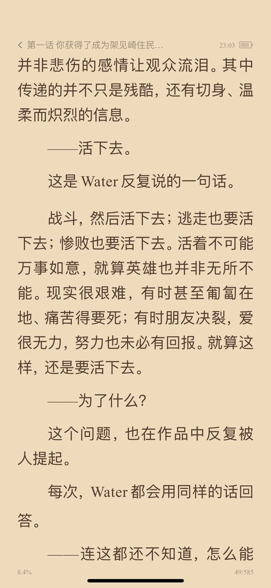
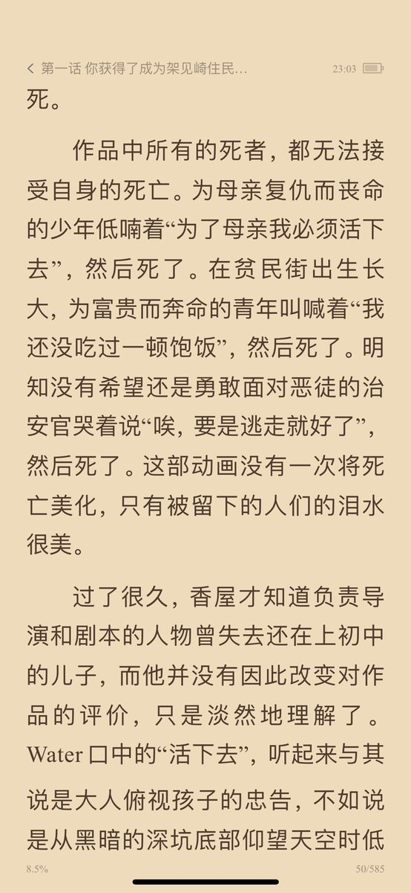
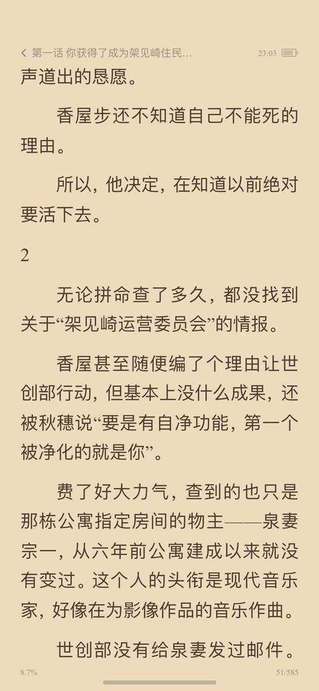

句号Ovo
@Ovoyachiyo
@pr80net @ZakkysLab 最近在看重启咲良田，那就聊聊我最喜欢的同作者的架见崎吧！整篇基本围绕“活着的意义”展开，看完让人很有活下去的动力（？）智斗描写也很精彩，后面更是升华到对人工智能的思考，总之我认为是非常棒的作品！以下是我喜欢的片段ww



pr80.net 永夜安港
@pr80net
明日空投篇
和我互关的在此贴写一些你最近的情绪、精神，日记，或者简单的一句想他，写写你最近面临什么挑战，分享分享你的歌单，都在这条tweet的转帖引用和评论区下面，扎克@ZakkysLab 会挑人中奖喔，要真挚喔 https://t.co/NPzLmKgb7E